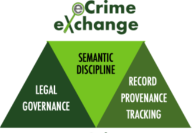

This instructional document is the "new user" guide to explain our processes and how to use the eCrime eXchange efficiently.
The eCX has two access paths, each with read and write functionality for
the authorized user: a GUI at https://ecrimex.net, and the API at https://ecrimex.net/api/v1/
The eCX data is divided into different data modules for different types of data, representing different kinds of cybercrime events (e.g. establishment of a phishing URL, registration of a brand-abusing domain name for a phishing campaign, etc.).
This division allows for each module to hold different data elements in records that represent and archive specific kinds of common cybercriminal events. For example, the phish module has a 'url' field as that's essential for phishing collectors. The malicious domain module does not have a URL field because the data records hold DNS names.
The overall user experience follows this path:
If your co-workers move on from your organization, we would appreciate a note letting us know so we can disable their accounts, reducing our password exposure on unused accounts.
The ECX data modules are:
To gain access to a specific module, log into the GUI, select the module of interest, read the description, and click the "Request Access" button. System admins will change your permissions.
Access to a module in the GUI gives you the ability to submit data via the GUI.
Submission via the API requires the submission privilege for that module. We ask that you test and perfect your API scripts using the eCX sandbox before asking for submission rights to the production eCX API. We have learned our lessons.
All of the eCX API /endpoints require a record to have a Confidence Factor that relates to the degree of manual, human processing used in scoring the report as an indicator of its trustability. As follows:
100 CF = Manual inspection/confirmation by an APWG member reporter, submitting data under terms set out in the APWG Data Sharing Agreement
90 CF = Automated inspection/discovery by Artificial Intelligence or Machine Learning systems directly curated by an APWG member submitter, under terms set out in the APWG Data Sharing Agreement. Users are encouraged to verify records at this level before just indiscriminately blocking them.
50 CF = Machine data-capture or third-party volunteered report without confirmation by APWG member personnel or by a member-curated AI/ML.
This is third-party source or general public sourcing so - on its face, without further meta-data that would speak to reliability - the assumption is that the record has a 50/50 chance of being accurate, therefore requiring user confirmation.
0 CF = False positive. Data that, after additional investigation, is not a phish nor malicious.
***eCX users may use the GUI or the API to annotate data records to add to their confidence or mark a record as a false positive.***
False positives have a confidence value of 0 (zero). Log into the eCX GUI, find the record you wish to modify, double click it, change the confidence to 0, and click update. You can also change the confidence value of a record via a PUT command in the API.
There is a sandbox of the eCX that periodically gets data inserted for testing. It has no direct connection to the production environment. It is located at https://sandbox.ecrimex.net, and your API key should work just fine there.
For each API request, your API key should reside in an HTTP Authorization header, like "Authentication: Bearer api-key-value"
As an example, using curl to retrieve the latest phish:
Using a python script for API access.
Users may also use their own scripts in any programming language for access.
The API User Guide, available under the "Docs" link in the GUI.
API Swagger Documentation, available in the Swagger API Docs or at Swagger API Docs.
An eCX New User's Guide is available.
There are some sample
python3 scripts to access the eCX via the API at:
Common frequently asked questions about the eCX are answered at: https://apwg.github.io/ecx2-faq/
Help is always available via email at support@ecrimex.net. Our support staff tries to respond promptly. Please include the error message or API call you are having issues with for niceness.
Join the announcement mail list to let users know if things are broken. Sign up at: https://members.apwg.org/mailman3/lists/ecx-announce.members.apwg.org/
Check out the new
eCX-users mail list, too, at: https://members.apwg.org/mailman3/lists/ecx-users.members.apwg.org/
As APWG members, you will be added to the members list which is good for general queries and questions about new attackers, techniques, or odd results.
We have a discord
server, but we are not yet exactly sure what to do with it. Please send your
suggestions regarding the development of this resource to: support@ecrimex.net
